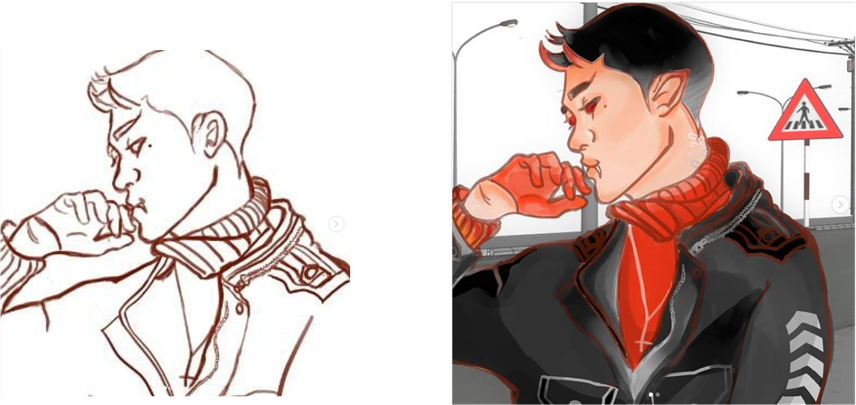

Digital art
Here is the sketch vs the final version of a digital portrait .
The program that was used to make this was Firealpaca, The brush used for the sketch was the pencil brush and the actual colouring part of it is done with a blend of the watercolour and the airbrush tool.

For thaat third image I actually made a 3D model in sketch up of the bathroom to experiment with different angles and then used that as a reference to draw the background. The art itself was done in photoshop using the general brushes as well as the airbrush